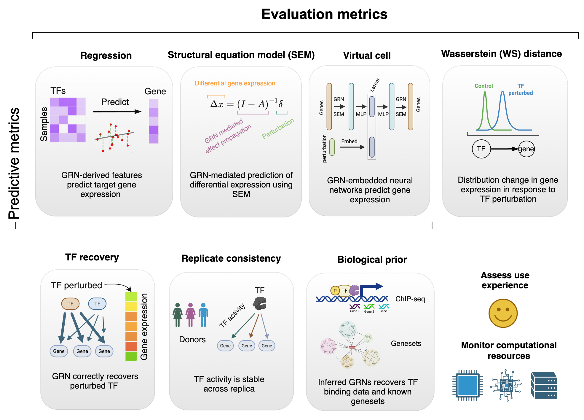
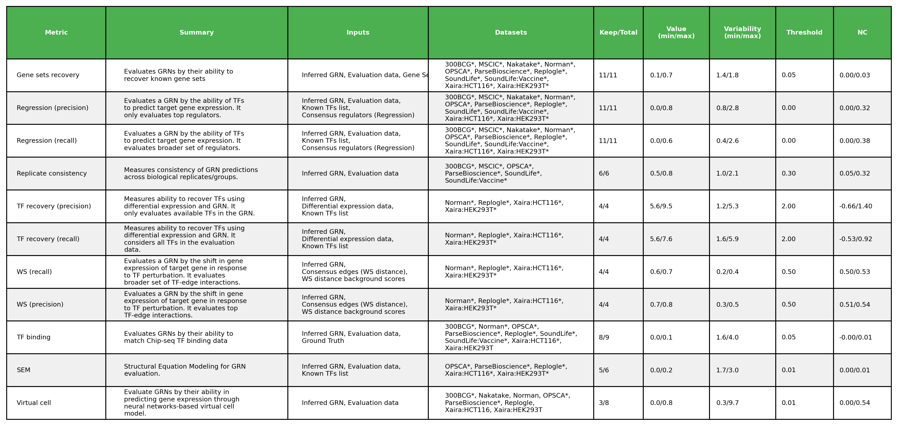

GRN evaluation
The evaluation metrics used in geneRNIB are summarized below.
{kind=link}

Each metric has particular implementation requirements that limit its applicability to certain datasets. The datasets applicable to each metric are listed in the following table.
In addition, to ensure that only informative metrics contribute to the benchmark, each metric is evaluated per dataset against two quality control criteria:
Performance threshold — the best score across all methods must exceed a threshold, defined as the maximum of a global floor (metric-specific) and the negative control score for that dataset. This filters out metrics where no method achieves meaningful signal.
Variability — the coefficient of variation (CV = range / mean) across methods must be ≥ 0.2. This filters out metrics that fail to discriminate between methods.
A metric is retained for a given dataset only if it passes both criteria. Those that passed quality control are marked with a star (★) in the table below. Note that the quality control process is repeated after adding a new GRN inference method to reflect the updated performance comparison.
{kind=link}

For a detailed description of each metric, refer to the geneRNIB paper. To map the naming conventions used in the code and this table, refer to surrogate_names in src/utils/config.py.
The evaluation metrics expect the inferred network to be in the form of an AnnData object with a specific format as explained in the GRN Inference page. It should be noted that the metrics currently evaluate only the top TF-gene pairs, limited to 50,000 edges, ranked by their assigned weight.
The inferred network should have a tabular format with the following columns:
source: TF gene name
target: Target gene
weight: Regulatory importance/likelihood score
Running GRN evaluation without Docker
Considering that Docker is not supported by certain systems, you can run the evaluation without Docker:
bash src/metrics/all_metrics/run_local.sh \
--dataset <dataset_name> \
--prediction <inferred_grn.h5ad> \
--score <output_score_file.h5ad> \
--num_workers <number_of_workers>
Example:
bash src/metrics/all_metrics/run_local.sh \
--dataset op \
--prediction resources/grn_models/op/collectri.h5ad \
--score output/score.h5ad \
--num_workers 20
If you are evaluating a new GRN model that is not part of geneRNIB, first generate the consensus prior file for the dataset you are evaluating on:
bash scripts/prior/run_consensus.sh --dataset op --new_model <new_grn_model_file.h5ad>
This will incorporate your model into the consensus prior, which is required for a fair evaluation.
Running GRN evaluation with Docker
bash scripts/run_grn_evaluation.sh \
--prediction <inferred_grn.h5ad> \
--save_dir output/ \
--dataset op \
--build_images true
--build_images true is only needed on the first run. Outputs scores to output/score_uns.yaml.
Running the full evaluation pipeline
bash scripts/run_grn_evaluation.sh --no_aws=true
--no_aws=true runs locally with Docker instead of submitting to AWS (the default).